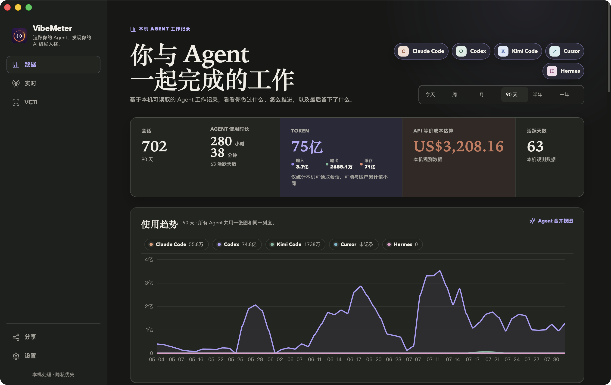
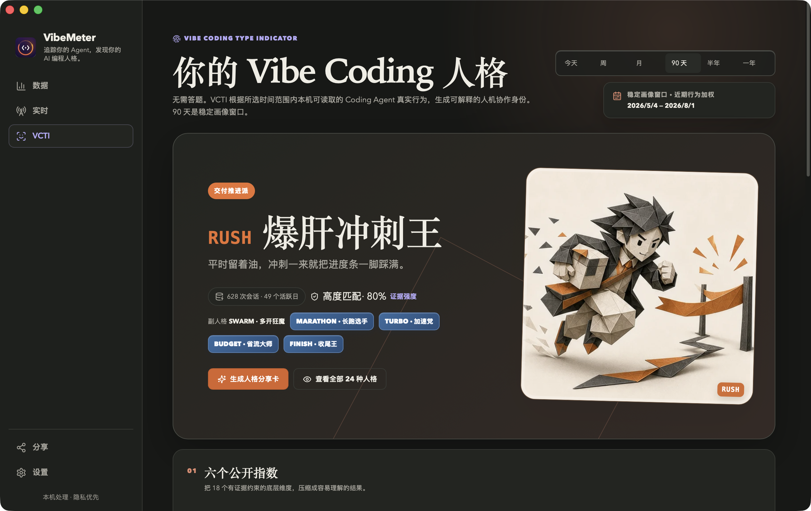

See every session in context
Sessions, time, tokens, skills, trends, models, and work events come together—no spreadsheet assembly required.

Track Claude Code and Codex live. Review readable local sessions as usage trends, share cards, and a VCTI profile.
Free & open source · Apple Silicon + Intel · macOS 14+ · ad-hoc signed · not notarized
Agent coverage
Claude Code and Codex provide precise live status. Kimi Code, Cursor, OpenClaw, and Hermes appear in history only when readable local records are available.

Claude CodeLive + history

CodexLive + history

Kimi CodeHistory when available
CursorHistory when available
OpenClawHistory when available

HermesHistory when available
The full picture
Sessions, time, tokens, skills, trends, models, and work events come together—no spreadsheet assembly required.

Notch and Live keep the agent, project, phase, and waiting state in view—without pulling you out of the work.
VCTI looks at how you start, delegate, verify, debug, and finish, then shows the closest profile with confidence and evidence.

At a glance
Notch shows what is happening now. The menu bar shows usage, quotas, and provider status for the range you choose.
Active agents stay on the left, and the highest-priority state stays on the right.

Choose a time range, then check tokens, activity, quotas, and provider status in one compact view.
VCTI / 24
VCTI looks at how you start, delegate, verify, debug, and finish, then finds the closest match among 24 profiles.
Every result includes confidence and evidence. Short time ranges stay clearly provisional.
Fixed rules. Computed on your Mac.
Local by design
Sessions are read and analyzed locally. Source histories and code repositories stay unchanged.
Notch and notifications use structured state—not prompts, code, paths, commands, or tool output.
Unavailable, not recorded, not observed, and true zero remain distinct. Empty data never becomes a made-up result.
Before you download
Choose the build for your Mac, then open the DMG and drag VibeMeter into Applications. ZIP builds are also available.
VibeMeter supports Apple Silicon and Intel Macs running macOS 14 or later. Both builds are ad-hoc signed and not Apple-notarized.
VibeMeter installs live hooks only after explicit onboarding consent. Existing configuration is merged, backed up, and removable from Settings.
VibeMeter is MIT licensed. Source code and releases are available on GitHub. GitHub.
Release history
VibeMeter for macOS
Choose the build that matches your Mac. DMG and ZIP are available for both Apple Silicon and Intel.